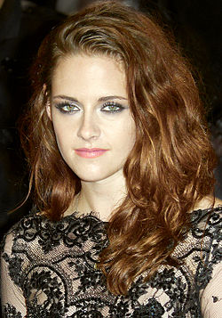
Bella Swan
Interpretada por Kristen Stewart, e protagonista humana que se muda para Forks e se apaixona por um vampiro, Edward Cullen, dando início a uma história de amor, incluindo um triângulo amoroso com um lobisomem.
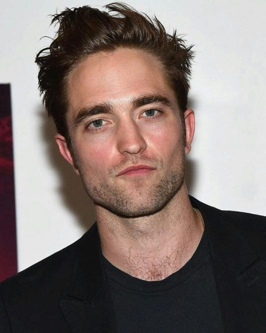
Edward Cullen
Interpretado por Robert Pattinson, Edward Cullen é o protagonista masculino, um vampiro telepático que se apaixona por Bella Swan
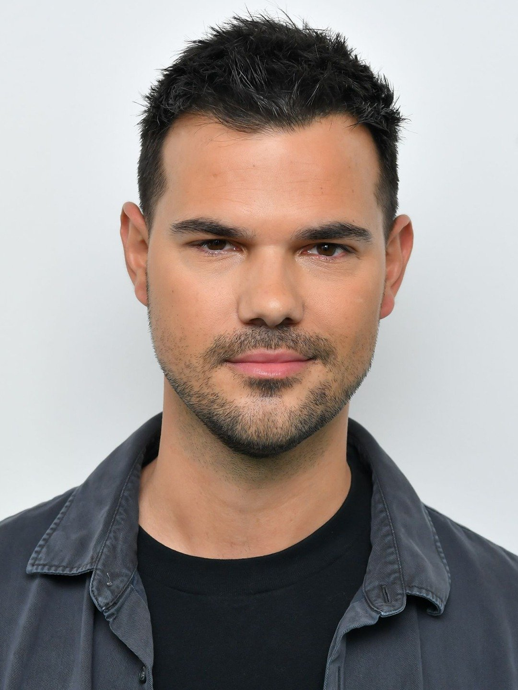
Jacob Black
Interpretado por Taylor Lautner, amigo de infância de Bella, que a ajuda a descobrir o segredo dos vampiros, mas que também guarda um segredo surpreendente.
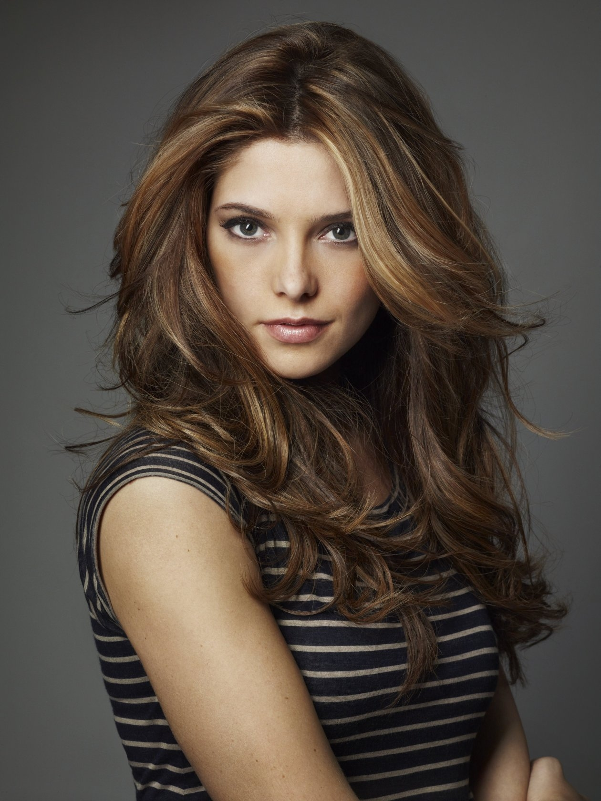
Alice Cullen
Interpretada por Ashley Greene, é a filha adotiva de Carlisle e Esme, a irmã adotiva de Edward e Emmett, e a esposa de Jasper Hale, com a capacidade de ver o futuro através de visões precognitivas.
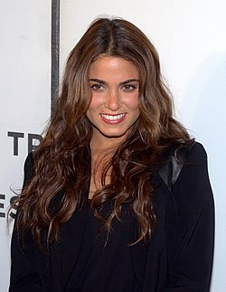
Rosalie Hale
Interpretada por Nikki Reed, é a irmã adotiva de Edward Cullen e esposa de Emmett Cullen, conhecida por sua beleza e teimosia.
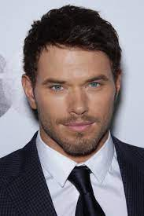
Emmett Cullen
Interpretado por Kellan Lutz, é o irmão adotivo mais forte e musculoso da família Cullen, casado com Rosalie Hale, e conhecido pela sua personalidade alegre, piadista e protetora.
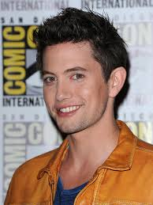
Jasper Hale
Interpretado por Jackson Rathbone, é um vampiro, que possui a capacidade de sentir e mudar o estado emocional das pessoas à sua volta. É casado com Alice Cullen e o filho adotivo de Carlisle e Esme.
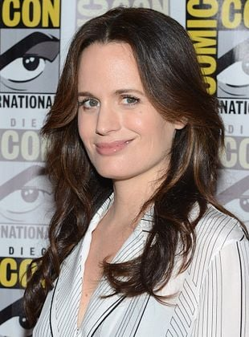
Esme Cullen
Interpretada por Elizabeth Reaser, é a matriarca da família e figura materna, sendo a esposa de Carlisle, a mãe adotiva de Edward, Alice, Emmett, Rosalie e Jasper, e a futura sogra de Bella. Ela é conhecida por sua profunda capacidade de amar e acolhe Bella com carinho, tratando-a como uma filha.
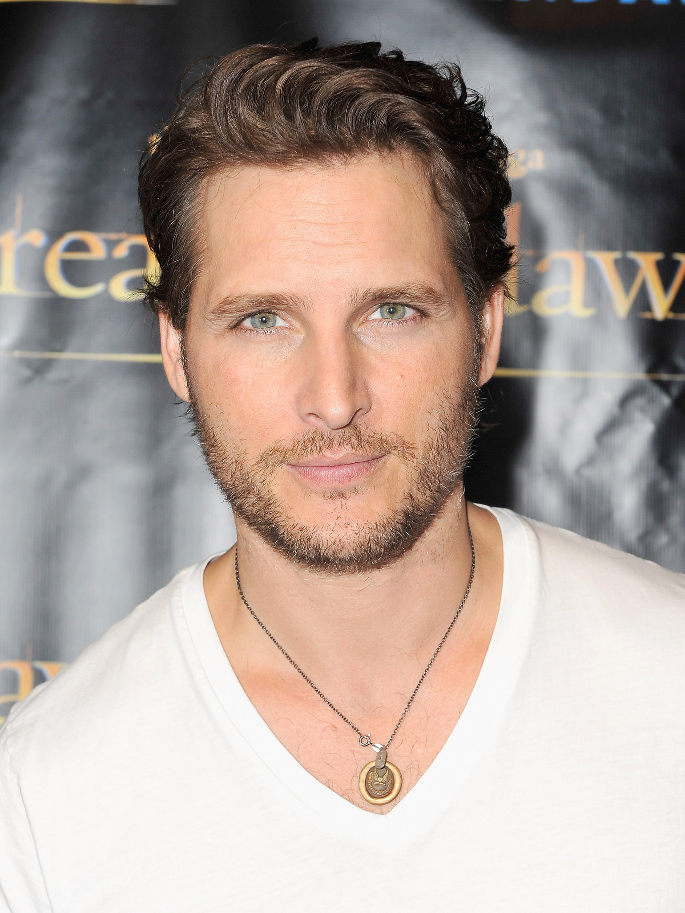
Dr. Carlisle Cullen
Interpretado por Peter Facinelli, é o patriarca da família de vampiros, um médico com um grande senso de compaixão, que se tornou vegetariano ao recusar o sangue humano para se alimentar de sangue animal. Ele é o pai adotivo de Edward, Alice, Emmett, Jasper e Rosalie, e o marido de Esme, formando uma família que acolhe Bella e se tornam um "clã" de vampiros com a mesma ética.
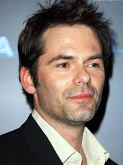
Charlie Swan
Interpretado por Billy Burke, Charlie Swan é o pai de Bella e Chefe de Polícia em Forks, Washington. Ele é um pai carinhoso e ingênuo, desconfiado do mundo dos vampiros em que sua filha está envolvida.
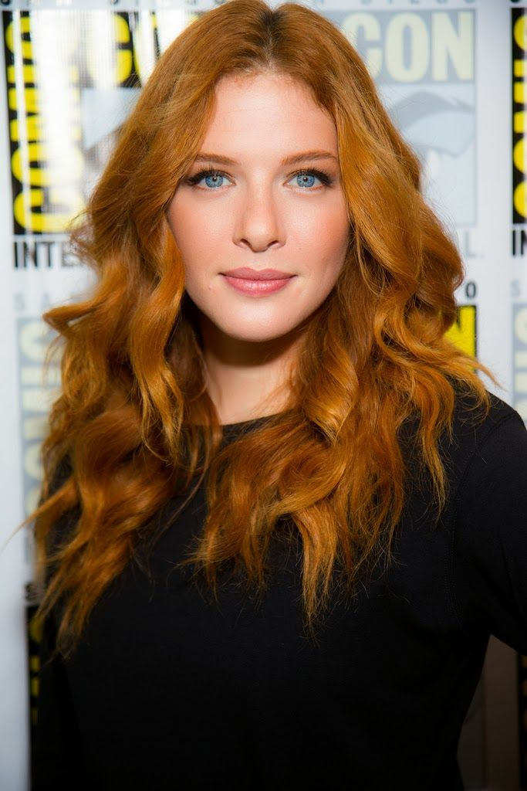
Victoria
Interpretada por Rachelle Lefevre, é uma vampira ruiva que, inicialmente parceira do vampiro James, busca vingança contra Bella Swan após a morte de James e torna-se a principal antagonista da série.
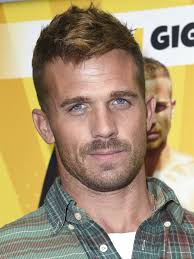
James
Interpretado por Cam Gigandet, é o principal antagonista e um vampiro rastreador que caça Bella para se divertir, com o objetivo de matá-la.